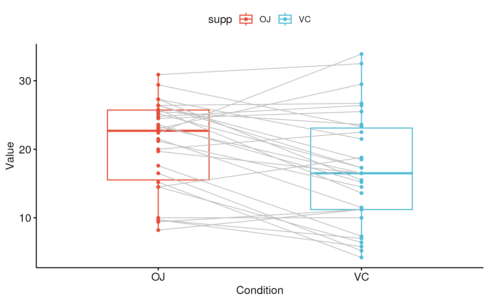

Plot paired data.
ggpaired(
data,
cond1,
cond2,
x = NULL,
y = NULL,
id = NULL,
color = "black",
fill = "white",
palette = NULL,
width = 0.5,
point.size = 1.2,
line.size = 0.5,
line.color = "black",
linetype = "solid",
title = NULL,
xlab = "Condition",
ylab = "Value",
facet.by = NULL,
panel.labs = NULL,
short.panel.labs = TRUE,
label = NULL,
font.label = list(size = 11, color = "black"),
label.select = NULL,
repel = FALSE,
label.rectangle = FALSE,
ggtheme = theme_pubr(),
...
)a data frame
variable name corresponding to the first condition.
variable name corresponding to the second condition.
x and y variables, where x is a grouping variable and y contains
values for each group. Considered only when cond1 and cond2
are missing.
variable name corresponding to paired samples' id. Used to connect paired points with lines.
points and box plot colors. To color by conditions, use color = "condition".
box plot fill color. To change fill color by conditions, use fill = "condition".
the color palette to be used for coloring or filling by groups. Allowed values include "grey" for grey color palettes; brewer palettes e.g. "RdBu", "Blues", ...; or custom color palette e.g. c("blue", "red"); and scientific journal palettes from ggsci R package, e.g.: "npg", "aaas", "lancet", "jco", "ucscgb", "uchicago", "simpsons" and "rickandmorty".
box plot width.
point and line size, respectively.
line color.
line type.
plot main title.
character vector specifying x axis labels. Use xlab = FALSE to hide xlab.
character vector specifying y axis labels. Use ylab = FALSE to hide ylab.
character vector, of length 1 or 2, specifying grouping variables for faceting the plot into multiple panels. Should be in the data.
a list of one or two character vectors to modify facet panel labels. For example, panel.labs = list(sex = c("Male", "Female")) specifies the labels for the "sex" variable. For two grouping variables, you can use for example panel.labs = list(sex = c("Male", "Female"), rx = c("Obs", "Lev", "Lev2") ).
logical value. Default is TRUE. If TRUE, create short labels for panels by omitting variable names; in other words panels will be labelled only by variable grouping levels.
the name of the column containing point labels. Can be also a character vector with length = nrow(data).
a list which can contain the combination of the following elements: the size (e.g.: 14), the style (e.g.: "plain", "bold", "italic", "bold.italic") and the color (e.g.: "red") of labels. For example font.label = list(size = 14, face = "bold", color ="red"). To specify only the size and the style, use font.label = list(size = 14, face = "plain").
can be of two formats:
a character vector specifying some labels to show.
a list containing one or the combination of the following components:
top.up and
top.down: to display the labels of the top up/down points. For
example, label.select = list(top.up = 10, top.down = 4).
criteria: to filter, for example, by x and y variabes values, use
this: label.select = list(criteria = "`y` > 2 & `y` < 5 & `x` %in%
c('A', 'B')").
a logical value, whether to use ggrepel to avoid overplotting text labels or not.
logical value. If TRUE, add rectangle underneath the text, making it easier to read.
function, ggplot2 theme name. Default value is theme_pubr(). Allowed values include ggplot2 official themes: theme_gray(), theme_bw(), theme_minimal(), theme_classic(), theme_void(), ....
other arguments to be passed to be passed to ggpar().
# Example 1
#::::::::::::::::::::::::::::::::::::::::::
before <-c(200.1, 190.9, 192.7, 213, 241.4, 196.9, 172.2, 185.5, 205.2, 193.7)
after <-c(392.9, 393.2, 345.1, 393, 434, 427.9, 422, 383.9, 392.3, 352.2)
d <- data.frame(before = before, after = after)
ggpaired(d, cond1 = "before", cond2 = "after",
fill = "condition", palette = "jco")
# Example 2
#::::::::::::::::::::::::::::::::::::::::::
ggpaired(ToothGrowth, x = "supp", y = "len",
color = "supp", line.color = "gray", line.size = 0.4,
palette = "npg")
